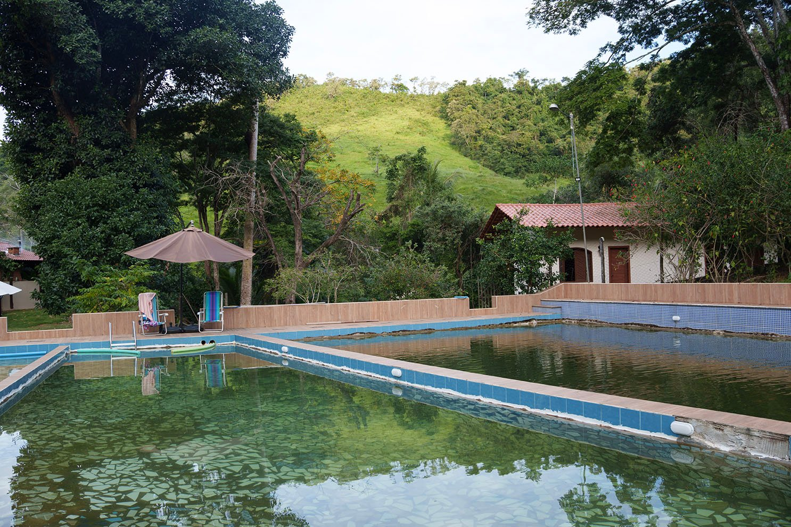
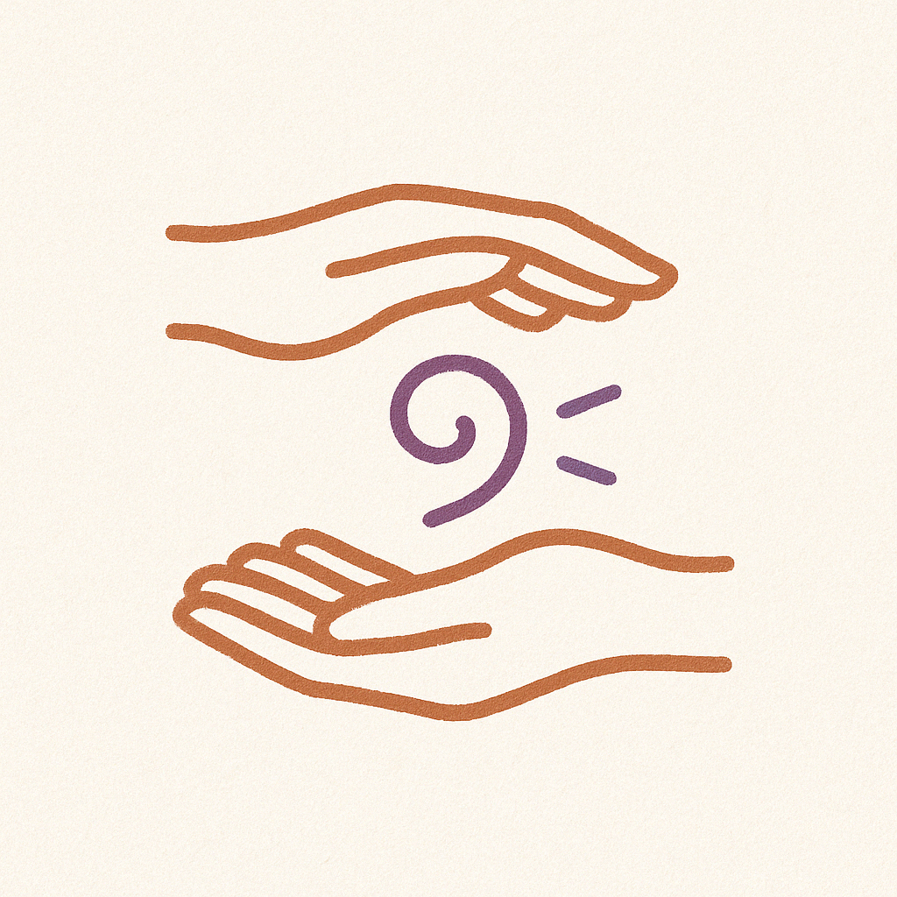
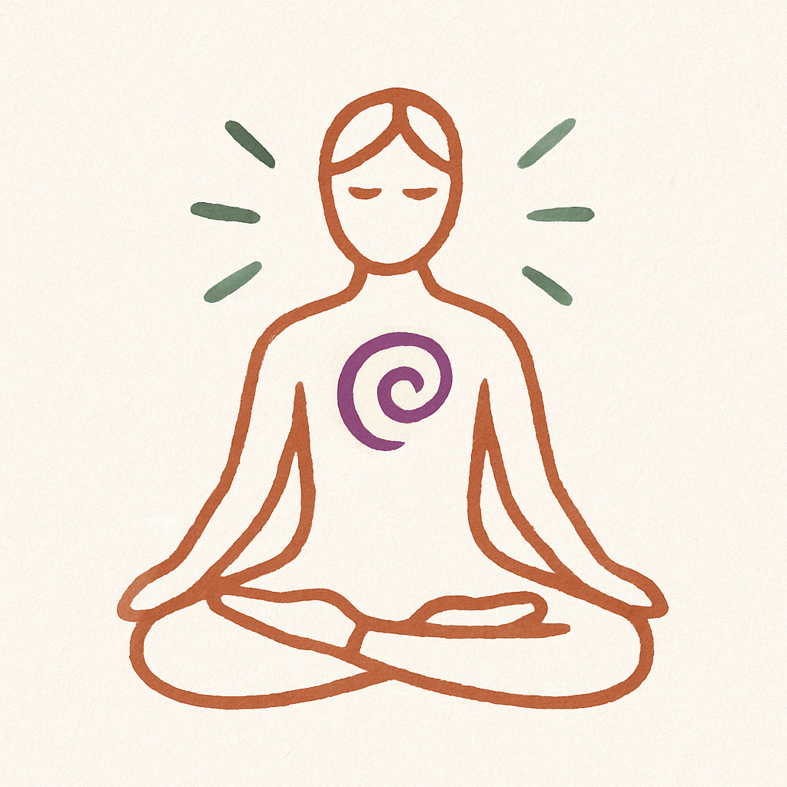
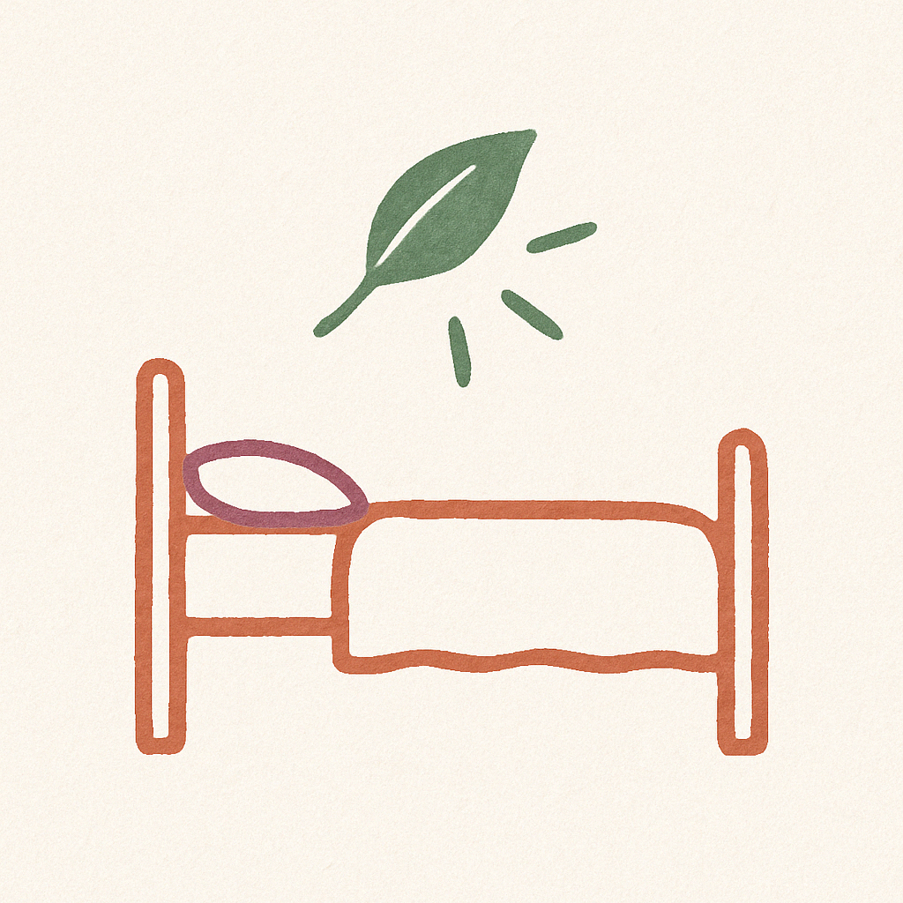
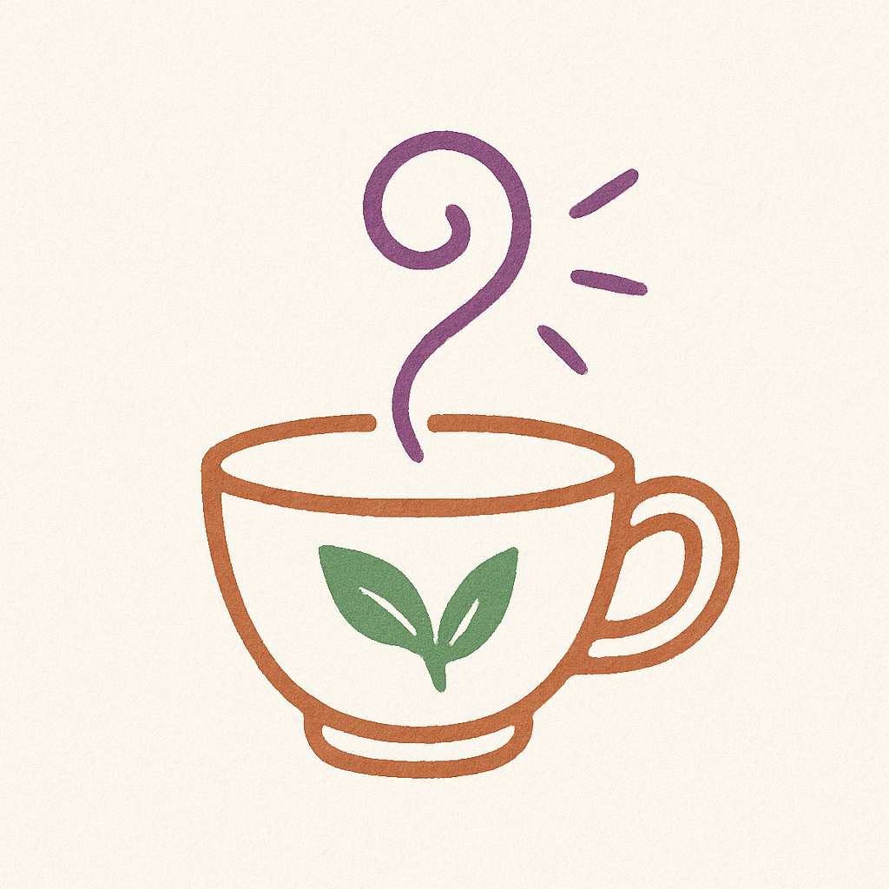
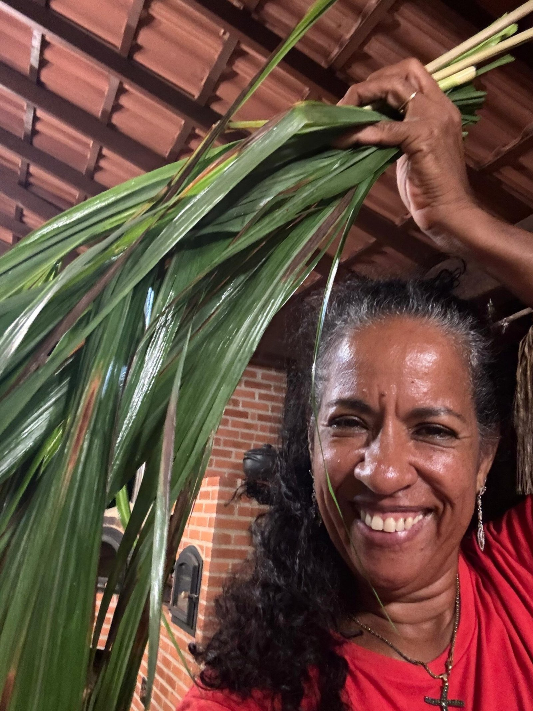

Um espaço vivo de cura, expressão e reconexão — onde a arte, o corpo e a espiritualidade se entrelaçam como caminhos de transformação.
Arte · Cura · PresençaInspirado nas Healing Arts, o Arte na Cura entende a arte não apenas como forma de expressão, mas como frequência viva que atravessa o corpo, a alma e o espaço com ritmo, som e presença. Aqui, ritual e improviso se encontram, o gesto vira prece e a música vira medicina.
Mais que um lugar, somos um campo vivo de experiências transformadoras.

Retiros com foco em processos profundos de cura — saúde mental, reconexão e regeneração.
Saiba mais
Práticas integrativas, rituais, arte e espiritualidade em conexão com a natureza.
Saiba mais
Recolha-se com consciência e cuidado no campo de cura, mesmo fora dos retiros.
Saiba mais
Caminhos de cura individualizados com terapeutas dedicados ao seu processo.
Saiba maisUm convite à pausa. O momento de ouvir a alma e abrir espaço para o que deseja florescer.
Desacelerar, respirar, sentir. Estar inteiro no momento presente é o solo da cura.
Desintoxicar-se física, emocional e energeticamente para abrir caminho ao novo.
A arte como ponte para a alma: pintar, cantar, dançar, escrever — curar-se expressando.
Rituais e práticas que acolhem feridas e promovem verdadeira liberação.
Enraizar os aprendizados, cultivar novas escolhas e florescer com consciência.

"No Arte na Cura, a jornada começa na escuta e floresce na presença."
Guiomar Campbell é a idealizadora e terapeuta por trás do Arte na Cura. Com profundidade, presença e escuta ativa, ela criou um espaço onde a cura acontece em movimento — pelo corpo, pelo toque, pela voz e pelo silêncio.
Um campo de vibração onde a arte pulsa como caminho, e cada pessoa encontra seu próprio ritmo de transformação.
Guiomar Campbell Idealizadora e TerapeutaAcolher é mais importante que ensinar. Nosso fazer é guiado pelo coração — com gentileza e respeito ao tempo de cada ser.
Estar inteiro no aqui e agora. A cura encontra passagem no silêncio, no toque e no olhar que vê sem julgamento.
Nada é fixo, tudo está em fluxo. A cura é corporal, energética, emocional e simbólica — seguindo o ritmo da vida.
Cantar, dançar, pintar, escrever — tudo pode ser oração em movimento. A expressão é linguagem da alma.
Não usamos máscaras. Honramos a trajetória de cada pessoa como única e sagrada.
Sem dogmas, sem hierarquias. Apenas presença, verdade e intenção — onde o divino se revela no silêncio e na natureza.
Assista à entrevista exibida na TV local e conheça o Arte na Cura pelas palavras de Guiomar.
O Arte na Cura está esperando por você. Venha conhecer o espaço, participar de um evento ou simplesmente dar o primeiro passo.
Entrar em Contato